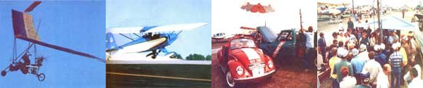

Where did MOTHER go to run airplanes on homemade alcohol? Why, to this year's Experimental Aircraft Association's gathering in... OSHKOSH BY GOSH!
The Experimental Aircraft Association's Fly-In-held this year (as it has been for nearly a decade) at Oshkosh, Wisconsin's Wittman Field airport- is the world's largest aviation event, bar none!
During the Fly-in's unbroken history(the EAA has held the annual shindig-at various locations-every year since 1953) the gathering has grown from the small group of 40 aircraft that assembled for the first event to a total of 1,492 in 1978. And this year's meet boasted an even greater number of planes ... as well as half a million experimental-aircraft enthusiasts!
It's no wonder, then (considering both the size of the event and the fact that EAA folks are, themselves, pretty good examples of MOTHER-type "do-it-yourselfers"), that this magazine was pleased to be invited to the Flyin, And we were especially glad to be offered a chance to convert Experimental Aircraft Association president Paul Poberezny's Volkswagen-engined "Pober Pixie" airplane, his "Red One" VW staff car, and a "Pterodactyl" microlight aircraft to run on our own alcohol fuel! (See the story on page 48 of this issue.)
Paul was right pleased with the way ethatnol powered the vehicles, too. In fact, he became eager to promote the use of renewable fuel himself ... and-since he's only the "chief" of the world's most famous aviation association-he ought to know what he's talking about when he says that ol' MOM is really onto something!
EDITOR'S NOTE: A one-year EAA membership-including 12 issues of the group's magazine, Sport Aviation-can he hod for $25 front EAA, Dept. TMEN, Box 229, Hale's Corners, Wisconsin 53130.
|
 STAFF PHOTOS From left: The Pober Pixie...a Pterodactyl Fledgling...the red one VW...and MOTHER'S still all pleased the Fly-In crowds. |
|
|